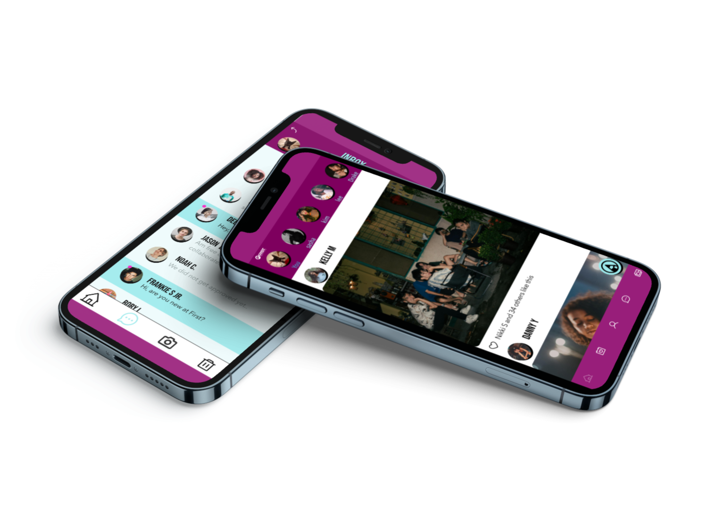

Time Duration: Oct 3rd 2024 Five days
Roles & Responsiblities: Research & Wireframing
Tools Used: Figma
This was our final project of this course, we were working in a group of four to come up with a new social media app for F.I.R.S.T. Institute students. The goal of this project was to develop the main pages of the app, without delving too deep into the deeper individual pages of the site map. We were to follow F.I.R.S.T.'s brand guidelines in order to maintain brand consistency.
Our group was responsible for designing 9 pages of an app. How we showed these in our designs are completely up to us and our group. This can be through links, buttons, icons, etc. These where the required pages.
User Research: My part of the design Process was to work on the sign in page and the home page, i started researching inspirations for how home pages and sign in pages look, i gathered all my all research and created a mood board, which helped me come up with my low-fi wireframes.